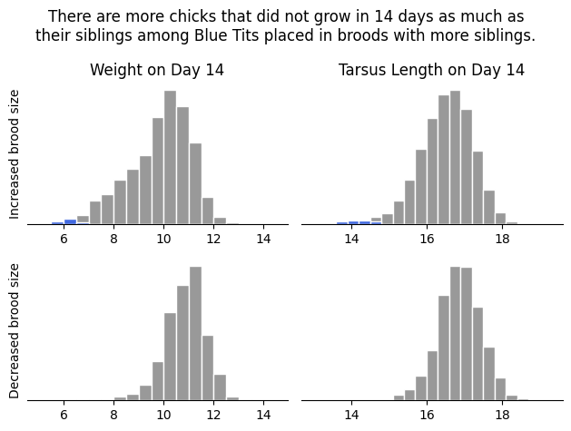

Week 12: A short note on reproducibility#
April 2, 2025#
Michael Jongho Moon
What have they learned?#
The analysis indicates that Atlantic Salmons might understand, or at least react to, human’s emotions in social settings.
Found in the Journal of Serendipitous and Unexpected Results article (Bennet et al., 2010)
One mature Atlantic Salmon (Salmo salar) participated in the fMRI study. The salmon measured approximately 18 inches long, weighed 3.8 lbs, and was not alive at the time of scanning. It is not known if the salmon was male or female, but given the post-mortem state of the subject this was not thought to be a critical variable.
Foam padding was placed within the head coil as a method of limi- ting salmon movement during the scan, but proved to be largely unnecessary as subject motion was exceptionally low.

Source: https://xkcd.com/882/
Example 2: Too many siblings?#

Photo by Francis C. Franklin. Source
{kind=link}
How is the growth of nestlings influenced by the number of siblings in the nest?
Researchers set up 1,100 nest boxes for blue tits and manipulated brood sizes one or two days after hatching to artifically create nests with smaller brood sizes vs. larger brood sizes.
They measured and recorded the growths of the chicks.
They recruited many analysts teams and shared the same data to answer the question.
The original data include many variables…
import pandas as pd
import numpy as np
bts = pd.read_csv("blue_tit_data_updated_2020-04-18.csv")
bts.head()
Let’s look at the main variables of interest…
bts_selected = bts.copy()[
["rear_Cs_at_start_of_rearing", "day_14_weight", "day_14_tarsus_length"]
].rename(columns={
"rear_Cs_at_start_of_rearing":"Maniuplated Brood Size",
"day_14_weight":"Weight on Day 14",
"day_14_tarsus_length":"Tarsus Length on Day 14"
})
bts_selected.loc[bts["rear_nest_trt"] == 5, "Brood Size Manipulation"] = "Increased"
bts_selected.loc[bts["rear_nest_trt"] == 6, "Brood Size Manipulation"] = "Decreased"
bts_selected.dropna(inplace=True)
bts_selected.groupby("Brood Size Manipulation").describe()
import matplotlib.pyplot as plt
fig, axs = plt.subplots(2, 2, tight_layout=True, sharex=True)
axs[0][0].hist(
bts_selected.loc[
bts_selected["Brood Size Manipulation"] == "Increased",
"Weight on Day 14"]);
axs[0][0].set_title("Increased brood size")
axs[1][0].hist(
bts_selected.loc[
bts_selected["Brood Size Manipulation"] == "Decreased",
"Weight on Day 14"]);
axs[1][0].set_title("Decreased brood size")
axs[0][1].boxplot(
bts_selected.loc[
bts_selected["Brood Size Manipulation"] == "Increased",
"Weight on Day 14"],
vert=False);
axs[1][1].boxplot(
bts_selected.loc[
bts_selected["Brood Size Manipulation"] == "Decreased",
"Weight on Day 14"],
vert=False);
How is the growth of nestlings influenced by the number of siblings in the nest?
To answer the question, we can compute the difference in mean weights by day 14 between those placed in inflated broods vs. those placed in reduced broods.
def compute_mean_diff(data, column):
mean_weight_increaed_brood = data.loc[
data["Brood Size Manipulation"] == "Increased", column].mean()
mean_weight_reduced_brood = data.loc[
data["Brood Size Manipulation"] == "Decreased", column].mean()
return mean_weight_reduced_brood - mean_weight_increaed_brood
observed_diff = compute_mean_diff(bts_selected, "Weight on Day 14")
We can also compute the associated 95% confidence interval.
def boot_mean_diff(data, column="Weight on Day 14"):
boot = data.sample(frac=1, replace=True)
boot_diff = compute_mean_diff(boot, column)
return boot_diff
boot_diffs = []
for _ in range(5000):
boot_diffs.append(boot_mean_diff(bts_selected))
boot_diffs_series = pd.Series(boot_diffs)
diff_ci_95 = np.round(np.percentile(boot_diffs, [2.5, 97.5]), 2)
bins = np.arange(.83, 1.2, .01)
plt.hist(boot_diffs_series, edgecolor="white", color="teal", bins=bins)
plt.hist(boot_diffs_series[
(boot_diffs_series > diff_ci_95[1]) | (boot_diffs_series < diff_ci_95[0])],
edgecolor="white", color="grey", bins=bins);
print(f"The observed difference in mean weight on day 14 is {np.round(observed_diff,2)}.")
print(f"The bootstrap 95% CI for the difference in means is {diff_ci_95}.")
There is more than one way answer the question with the data#
We could have answered the question by comparing the birds’ Tarsus Lengths.
observed_diff_length = compute_mean_diff(bts_selected, "Tarsus Length on Day 14")
boot_diffs_length = []
for _ in range(5000):
boot_diffs_length.append(boot_mean_diff(bts_selected, "Tarsus Length on Day 14"))
boot_diffs_length_series = pd.Series(boot_diffs_length)
diff_length_ci_95 = np.round(np.percentile(boot_diffs_length, [2.5, 97.5]), 2)
bins = np.arange(0.25, 0.52, .01)
plt.hist(boot_diffs_length_series, edgecolor="white", color="teal", bins=bins)
plt.hist(boot_diffs_length_series[
(boot_diffs_length_series > diff_length_ci_95[1])
| (boot_diffs_length_series < diff_length_ci_95[0])],
edgecolor="white", color="grey", bins=bins);
print(f"The observed difference in mean weight on day 14 is {np.round(observed_diff_length,2)}.")
print(f"The bootstrap 95% CI for the difference in means is {diff_length_ci_95}.")
There are other analytical decisions and combinations of such decisions can lead to a large number of possible, and valid, analyses.
The recruited teams for the project reported over 100 different results (Gould et al. 2024; https://egouldo.github.io/ManyAnalysts/#fig-forest-plots-Zr-1)
What does it mean for your project?#
One of the evaluation criteria for your final projects is reproducibility of slide content.
You must demonstrate that you understand the concepts introduced in class and apply them to answer a research question.
Your TA will attempt to reproduce your slides using the Jupyter notebook (.ipynb) and data files you submit.
If your TA cannot run the .ipynb files you submit to reproduce your slides content then your group will receive 0; if the TA has to make minor changes to get it to run then your group will receive 1; and if it runs with no changes then your group will receive 2.
Producing reproducible research also helps communicate your analytical decisions/process in a transparent manner.
Help TAs!
The easiest method would be to place your data file(s) in the same folder as your notebook file and read the data file with the file name only.
If you must use a folder, use a relative path to the folder from the notebook file’s location. e.g.,
data/datafile.csvif your notebook file is inproject/notebook.ipynband data file is inproject/data/datafile.csv
One more tip for your slides#
Code for creating plots are often very long.
Displaying long lines of codes isn’t effective way of communicating your work on a slide presentation; especially for a time-limited video.
Include codes that generate and save plots as files (
plt.savefig()). Then, use markdown to load the saved images. You can “skip” the codes in the slide show but your notebooks will still be reproducible.
import matplotlib.pyplot as plt
# place multiple plots together
fig, axs = plt.subplots(2, 2, tight_layout=True)
bins = np.arange(5, 15, .5)
axs[0][0].hist(
bts_selected.loc[
bts_selected["Brood Size Manipulation"] == "Increased",
"Weight on Day 14"],
color="#999999", edgecolor="white", bins=bins);
axs[0][0].set_title("Weight on Day 14")
axs[0][0].set_ylabel("Increased brood size")
axs[1][0].hist(
bts_selected.loc[
bts_selected["Brood Size Manipulation"] == "Decreased",
"Weight on Day 14"],
color="#999999", edgecolor="white", bins=bins);
axs[0][0].hist(
bts_selected.loc[
(bts_selected["Brood Size Manipulation"] == "Increased")
& (bts_selected["Weight on Day 14"] <= bts_selected.loc[
bts_selected["Brood Size Manipulation"] == "Decreased",
"Weight on Day 14"].min()),
"Weight on Day 14"],
color="royalblue", edgecolor="white", bins=bins);
axs[1][0].set_ylabel("Decreased brood size")
bins = np.arange(13, 19.3, .3)
axs[0][1].hist(
bts_selected.loc[
bts_selected["Brood Size Manipulation"] == "Increased",
"Tarsus Length on Day 14"],
color="#999999", edgecolor="white", bins=bins);
axs[0][1].hist(
bts_selected.loc[
(bts_selected["Brood Size Manipulation"] == "Increased")
& (bts_selected["Tarsus Length on Day 14"] <= bts_selected.loc[
bts_selected["Brood Size Manipulation"] == "Decreased",
"Tarsus Length on Day 14"].min()),
"Tarsus Length on Day 14"],
color="royalblue", edgecolor="white", bins=bins);
axs[0][1].set_title("Tarsus Length on Day 14")
axs[1][1].hist(
bts_selected.loc[
bts_selected["Brood Size Manipulation"] == "Decreased",
"Tarsus Length on Day 14"],
color="#999999", edgecolor="white", bins=bins);
for i in [0, 1]:
for j in [0, 1]:
# remove plot frame except bottom
axs[i][j].spines['top'].set_visible(False)
axs[i][j].spines['right'].set_visible(False)
# axs[i][j].spines['bottom'].set_visible(False)
axs[i][j].spines['left'].set_visible(False)
# remoe y axis ticks
axs[i][j].set_yticks([]);
# place a global plot title on top of the group of subplots
fig.suptitle("There are more chicks that did not grow in 14 days as much as\ntheir siblings among Blue Tits placed in broods with more siblings.")
plt.savefig("fig.png", bbox_inches="tight") # bbox_inches="tight" avoids plot elements being cut off
plt.close();
